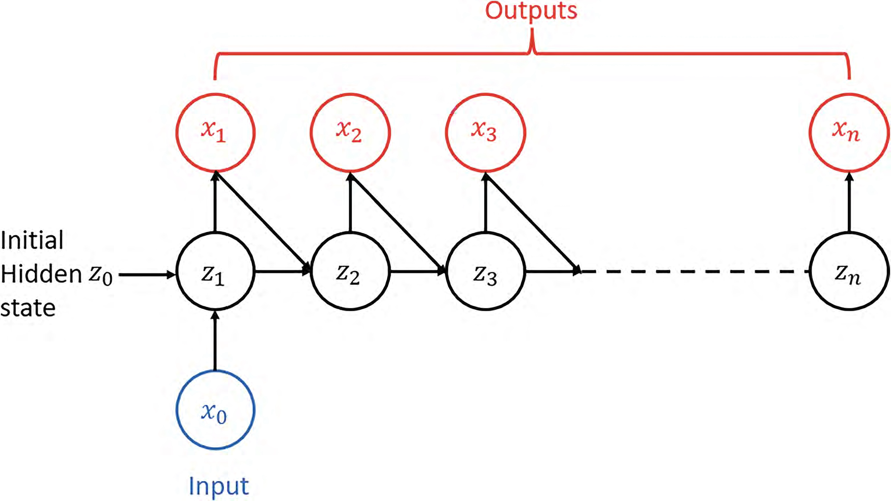
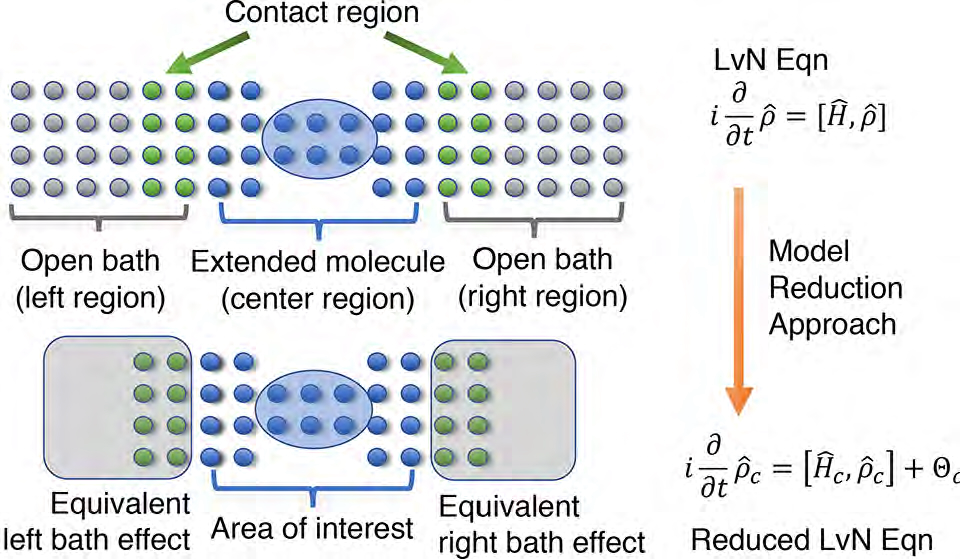

| |
 |
 |
|
| |
Manuscripts in preparation:
|
|
| |
|
|
| |
A. Submitted and Published peer reviewed papers:
|
|
| |
-
Pegah Mohammadipour and Xiantao Li, Reducing Circuit Depth in Lindblad Simulation via Step-Size
Extrapolation,
preprint, 2025.
-
Xiantao Li, From Linear Differential Equations to Unitaries: A Moment-Matching
Dilation Framework with Near-Optimal Quantum Algorithms,
preprint, 2025.
-
Taehee Ko, Sangkook Choi, Hyowon Park, Xiantao Li, Classical optimization algorithms for diagonalizing quantum Hamiltonians,
preprint, 2025.
|
|
| |
-
Xiantao Li, Exponential Quantum Speedup for Simulating Classical Lattice Dynamics,
preprint, 2025.
-
Guneykan Ozgul, Xiantao Li, Mehrdad Mahdavi, Chunhao Wang, Quantum Speedups for Markov Chain Monte Carlo Methods with Application to Optimization,
preprint, 2025.
-
Pegah Mohammadipour and Xiantao Li, Direct Analysis of Zero-Noise Extrapolation: Polynomial Methods, Error Bounds, and Simultaneous Physical-Algorithmic Error Mitigation,
preprint, 2025.
-
Ke Wang and Xiantao Li, Non-Markovian Noise Mitigation: Practical Implementation, Error Analysis, and the Role of Environment Spectral Properties,
Physical Review A 112 (1), 012406, 2025.
-
Zhenning Liu, Xiantao Li, Chunhao Wang, and Jin-Peng Liu Toward end-to-end quantum simulation for protein dynamics,
preprint, 2024.
-
Hsuan-Cheng Wu and Xiantao Li, Structure-preserving quantum algorithms for linear and nonlinear Hamiltonian systems,
preprint, 2024.
-
Hsuan-Cheng Wu, Jiayao Wang and Xiantao Li, Quantum Algorithms for Nonlinear Dynamics: Revisiting Carleman
Linearization with No Dissipative Conditions,
SIAM Journal on Scientific Computing, 2025.
-
Wenhao He, Tongyang Li, Xiantao Li Zecheng Li, Chunhao Wang and Ke Wang, Efficient Optimal Control of Open Quantum Systems,
TQC, 2024.
-
Zhiyan Ding, Xiantao Li and Lin Lin, Simulating Open Quantum Systems Using Hamiltonian Simulations,
PRX Quantum, 5, 020332, 2024.
-
Zhiyan Ding, Taehee Ko, Jiahao Yao, Lin Lin, and Xiantao Li, Random coordinate descent: a simple alternative for optimizing parameterized quantum circuits,
Physical Review Research, 2024.
-
Guneykan Ozgul, Xiantao Li, Mehrdad Mahdavi, Chunhao Wang, Stochastic Quantum Sampling for Non-Logconcave Distributions and Estimating Partition Functions,
ICML, 2024.
-
With Taehee Ko and Chunhao Wang, Implementation of the Density-functional Theory on Quantum Computers
with Linear Scaling with respect to the Number of Atoms,
IEEE International Conference on Quantum Computing and Engineering (QCE), 2024.
-
With Ke Wang, Simulation-assisted learning of open quantum systems,
Quantum, 2024.
|
|
| |
-
With Jin, Liu, Yu, Quantum Simulation for Partial Differential Equations with Physical Boundary or Interface Conditions.,
Journal of Computational Physics, Vol 498, 112707, 2024.
-
With Jin, Liu, Yu, Quantum Simulation for Quantum Dynamics with Artificial Boundary Condition,
SIAM Journal on Scientific Computing, Accepted, 2024.
-
With C. Wang, Efficient Quantum Algorithms for Quantum Optimal Control,
ICML, 2023.
-
With C. Wang, Efficient Simulating Markovian open quantum systems using higher-order series expansion,
ICALP, 2023.
-
Enabling Quantum Speedup of Markov Chains using a Multi-level Approach,
Preprint, 2022.
-
With Venturi,
The Mori-Zwanzig formulation of deep learning,
Research in the Mathematical Sciences, Vol 10, 23, 2023.
|
|
| |
-
With Luo and Hao,
Stability Preserving Data-driven Models With Latent Dynamics,
Chaos, Vol 32, 081103 2022.
-
With Taehee Ko,
A Local Convergence Theory for the Stochastic Gradient Descent Method in Non-Convex Optimization With Non-isolated Local Minima,
Journal Machine Learning, Vol 2, 138-160, 2023.
-
With S. Jin and Nana Liu,
Hamiltonian Simulation in the semi-classical regime
Quantum, Vol 6, pp 739, 2022.
-
X Li,
Some Error Analysis for the Quantum Phase Estimation Algorithms
Journal of Physics A: Mathematical and Theoretical, 2022.
-
With Chunhao Wang,
Succinct Description and Efficient Simulation of Non-Markovian
Open Quantum Systems
Communications in Mathematical Physics,
, Vol 401, pages 147–183 2023.
-
With Shi Jin,
A Partially Random Trotter Algorithm for Quantum Hamiltonian Simulations,
Communications on Applied Mathematics and Computation, 2023.
|
|
| |
-
With Taehee Ko,
Stochastic Algorithms for Self-consistent Calculations of Electronic
Structures ,
Mathematics of Computation, Vol 92, 1693-1728, 2023.
-
With Chu,
A Projection-based Reduced-order Method for Electron Transport Problems
with Long-range Interactions ,
Journal of Chemical Physics, Volume 155, page 114105, 2021.
-
With Zhang and Harlim,
Error
Bounds of the Invariant Statistics in Machine Learning of Ergodic
It\^o Diffusions,
Physica D, Volume 427, page 133022, 2021.
-
With Luo and Hao, Projection based model
reduction for the immersed boundary method,
International Journal for Numerical Methods in Biomedical Engineering, 2021.
-
With Xie and Chen, A machine-learning method for time-dependent wave equations over unbounded domains,
preprint, 2021.
-
H. Lei and X. Li, Petrov-Galerkin methods for the construction of non-Markovian dynamics preserving nonlocal statistics,
Journal of Chemical Physics, 154, 184108 (2021).
|
|
| |
-
With S. Jin, Random Batch Algorithms for Quantum Monte Carlo simulations,
Communications in Computational Physics, Vol
28, 1907-1936, 2020.
-
X. Li, On Markovian Embedding Procedures for the
Non-Markovian Stochastic Schrodinger Equation,
Physics Letters A, Vol 387, 127036, 2021.
|
|
| |
-
With Q Du and L. Yuan,
Analysis of coarse-grained lattice models and connections to
nonlocal interactions,
CSIAM Trans. Appl. Math, 2020.
-
With H Zhang and J Harlim,
Estimating linear response statistics using orthogonal polynomial based estimators: An RKHS formulation,
Foundation of Data Science, Vol 2, 443-485, 2020.
-
With Francesca Grogan, H Lei, and N A Baker,
Data-driven molecular modeling with the generalized Langevin equation
Journal of Computational Physics, 2020.
-
With W. Chu,
A reduced-order modeling approach for electron transport in
molecular junctions,
J. Chem. Theory Comput, 2020.
-
With H. Zhang and J. Harlim,
Linear Response Based Parameter Estimation in the Presence of Model Error,
J Computational Physics, 2020.
|
|
| |
-
With Jingze Li,
Exponential Integrators for Stochastic Schrödinger Equation,
Physical Review E, 2020.
-
With Xiaojie Wu,
Absorbing boundary conditions for the time-dependent Schrodinger-type
equations in R^3,
Physical Review E, Vol 101, 013304, 2020.
Link to the paper
-
X. Li, The Computation of Local Stress in ab initio
Molecular Simulations,
Modelling Simul. Mater. Sci. Eng, 27 065016,
2019.
Link to the paper
-
X. Li, Absorbing Boundary Conditions for Time-dependent Schr\"{o}dinger equations: A Density-matrix Formulation,
Journal of Chemical Physics, (150) 114111,
2019.
Link to the paper
-
With W. Chu,
Nonlinear
Constitutive Models for Nano-scale Heat Conduction,
SIAM MMS, Volume 19, 533-549, 2021.
-
With L Ma and C Liu,
Coarse-graining Langevin dynamics using reduced-order techniques,
Journal of Computational Physics, (380)
170-190, 2019.
Link to the paper
-
With Zhand and Harlim,
A Parameter Estimation Method Using
Linear Response Statistics: Numerical Scheme,
Chaos, Vol 29, 033101, 2019.
-
With Weiqi Chu,
The Mori-Zwanzig formalism for the derivation of a fluctuating heat conduction model from molecular dynamics,
Communications in Mathemathical Sciences,
Vol. 17, 539 -- 563, 2019.
-
With Xiaojie Wu,
Stable absorbing boundary conditions for molecular dynamics in general domains,
Computational Mechanics (2018). https://doi.org/10.1007/s00466-018-1562-0.
-
With Weiqi Chu, On the asymptotic behavior of the kernel
function of the Generalized Langevin equation -- a
one-dimensional lattice model.
J. Statistical Physics, Vol. 170, page 378, 2018.
-
With Adam Telatovich,
The strong convergence of operator-splitting methods for the Langevin dynamics model,
submitted, arXiv:1706.04237, 2018.
-
With J. Harlim and H. Zhang,
A Parameter Estimation Method Using Linear Response Statistics,
Journal of Statistical Physics, Vol 168,
146-170, 2017.
-
With L Ma and C Liu,
Fluctuation-Dissipation Theorem Consistent Approximation of the Langevin Dynamics Model,
Comm. Math. Sci., Vol 15, 1171-1181, 2017.
-
With L Lin and J Lu,
PEXSI-$\Sigma$: A Green's function embedding method for Kohn-Sham density functional theory,
Annals of Mathematical Sciences and
Applications, Vol. 3, No. 2 (2018), pp. 441-472.
-
With H Lei and N Baker,
Data-driven parameterization of the generalized Langevin equation,
Proc. Natl. Acad. Sci., 1609587113, 2016.
-
With L. Ma and C. Liu,
From Generalized Langevin Equations to Brownian Dynamics and Embedded
Brownian Dynamics, Journal of Chemical Physics,
Vol 145, 114102, 2016.
-
With L. Ma and C. Liu,
Derivation and approximation of coarse-grained dynamics from Langevin
dynamics, Journal of Chemical Physics, 145, 204117 (2016).
-
With Xiaojie Wu,
Simulations of Micron-scale Fracture using Atomistic-based Boundary
Element Method, Modelling and
Simulation in Materials Science and Engineering, Vol 25, 085008, 2017.
-
With Zhen Li, Xin Bian, and George Em Karniadakis,
Incorporation of memory effects in coarse-grained modeling via the Mori-Zwanzig formalism
, Journal of Chemical Physics, 143, 243128 (2015).
-
With Jerry Z Yang, and Cheng Yuan,
An effective and easy-to-implement boundary condition for molecular
dynamics simulations, Communications in
Computational Physics, 26 (2019), pp. 192-205.
-
With L Wu and G Lin, The Mori-Zwanzig formalism for coarse-graining molecular dynamics models: A quasi-harmonic approximation, submitted.
-
With Jianfeng Lu, Traction Boundary Conditions for
Molecular Static Simulations,
Computer Methods in Applied Mechanics and Engineering,
Vol 308, 310--329, 2016.
-
With J. Harlim, Parametric reduced models for
the nonlinear Schrodinger equation,
Physical Review E, 91, 053306.
-
With C. Liang and X. Yuan, Some New Symplectic Multiple Timestepping Methods for Multiscale
Molecular Dynamics Models, submitted.
-
With Jingrun Chen and Carlos GarcÃa-Cervera, An
atomistic/continuum coupling method using enriched
bases, Multiscale Modeling and
Simulations, 13, 766-789, 2015.
|
|
| |
-
Heat conduction in nanoscale materials: A statistical-mechanics
derivation of the local heat flux, Physical
Review E, 90 032112 (2014) .
-
With Xiaojie Wu, On Consistent Definitions of Momentum and Energy Fluxes for Molecular Dynamics Models with Multi-body Interatomic Potentials, Modelling and Simulation in Materials Science and
Engineering, 23, 015003, 2015.
-
With M. Chen and C. Liu, Computation of the
Memory Functions in the Generalized Langevin Models for Collective
Dynamics of Macromolecules, J. Chemical
Physics, Vol 141 064112, 2014.
-
A numerical study of crack initiation in a bcc iron system based on dynamic bifurcation theory,
J. Appl. Phys.. (116), 164314 (2014).
|
|
| |
-
With P. Ming, A study on the quasiconinuum approximations of
a one-dimensional fracture model,
SIAM Multiscale Modeling and Simulation, 12, 1379-1400, 2014.
-
With J.Z. Yang, C. Mao and C. Liu, On the Cauchy-Born
Approximation at Finite Temperature,
Computational Materials Science,
99, 21-28, 2015.
-
With J.Z. Yang and X. Wu, Accurate Evaluations of Strain and
Stress in Atomistic Simulations of Crystalline Solids,
Modelling and Simulation in Materials Science and
Engineering, 22, Page 045008, 2014.
-
X. Li, Boundary condition for molecular dynamics models of solids: A variational formulation
based on lattice Green's functions, submitted.
|
|
| |
-
X. Li, Coarse-graining molecular dynamics models using an
extended Galerkin projection,
International Journal for Numerical Methods in
Engineering, Vol 99, pages 157--182, 2014.
-
X. Li and P. Ming, On the effect of ghost force in the
quasicontinuum method: dynamic problems in one
dimension, Commun. Comput. Phys., 15 (2014), pp. 647-676.
-
X. Li, A Bifurcation Study of Crack Initiation and Kinking, The European Physical Journal B, 86, 258, 2013.
-
J. Z. Yang, X. Wu and X. Li, A generalized Irving-Kirkwood formula for the
calculation of stress in
molecular dynamics models, Journal of Chemical Physics, 137, 134104 (2012).
-
X. Li, An atomistic-based boundary element method for the reduction of the molecular Statics Models.
Computer Methods in Applied Mechanics and Engineering .
Vol 225, 1-13, 2012
-
X. Li,
A coarse-grained molecular dynamics model for crystalline solids,
Int. J. Num. Meth. Eng. Vol 83, 986--997, 2010. [download preprint]
-
X. Li, J.Z. Yang, and W. E, A multiscale coupling method for the modeling of dynamics of solids with
application to brittle cracks, J. Comp. Phys. Vol 229, 3970-3987, 2010.
[download preprint]
-
X. Li, Efficient boundary condition for molecular statics
models of solids
Phys. Rev. B , Vol 80, 104112, 2009.
-
X. Li, On the stability of boundary conditions for molecular dynamics.
Journal of Computational and Applied Mathematics, Vol 231, 493-505,
2009.
-
X. Li, Variational boundary
condition for molecular dynamics: Treatment of the loading conditions.
Journal of Computational Physics, Vol 227, 10078--10093, 2008.
-
W. Wang, X. Li and C.W. Shu, The Discontinuous Galerkin Method for the
Multiscale Modeling of Dynamics of Crystalline Solids.
SIAM: Multiscale Modeling and Simulation, Vol 7, 294-320, 2008. .
-
X. Li and W. E, Boundary conditions for molecular dynamics simulations
of solids I: Treatment of the heat bath.
Phys. Rev. B, vol 76, 104107, 2007.
-
W. E, B. Engquist, X. Li, Weiqing Ren and E. Vanden-Eijnden, Heterogeneous multiscale methods: A review
Commun. Comput. Phys. Vol 2, 367, 2007.
-
J. Z. Yang and X. Li, Boundary conditions for molecular dynamics simulations
of solids: a comparative study.
Phys. Rev. B, vol 73, 224111, 2006. .
-
X. Li and W. E, Boundary conditions for molecular dynamics simulations
of solids at low temperature.
Comm. Com. Phys., Vol 1, 136--176, 2006.
PDF version .
-
X. Li and W. E, Multiscale modeling of dynamics of solids at finite temperature .
J. Mech. Phys. solids, Vol 53, 1650-1685, 2005..
|
|
| |
- Error estimate for a multiscale
method in Gas Dynamics
(with Weinan E), method of analysis and application, Vol 11, 557--572, 2005..
-
Multiscale modeling for crystalline solids.
(with Weinan E), Handbook of multiscale material modeling (edited by Sidney
Yip), 1491--1596, 2004.
- Some
recent progress on multiscale modeling.
(with Weinan E and Eric Vanden-Eijnden), lecture notes in Computational
Science and Engineering, Vol. 3, 3--22, 2004..
|
|
| |
- An
Eulerian method for computing multi-valued solutions of the
Euler-Poisson equations
(with John G. Wohlbier, Shi Jin and John Booske), Phys. Rev. E 70, 016502,
2004.
- On Two
Moment Systems for computing multiphase semiclassical limits of the
Schroedinger Equation
(with Shi Jin and Laurent Gosse), Math. Model Methods Appl. Sci.,
vol 3, No. 12, 1689-1723, 2003 .
-
Multi-phase Computations for
semiclassical limits of Schroedinger Equation and related problems:
Whitham vs Wigner.
(with Shi Jin), Physica D, 182, 46-85, 2003.
-
Numerical
solutions of Pressure-less Gas Equations
(with Francois Bouchut and Shi Jin),
SIAM J. Num. Anal. 41, 135-158, 2003
|
|
| |
B. Reports, Book Chapters and Conference Proceedings:
|
|
| |
-
Introduction to molecular dynamics simulations.
Lecture Notes Series, Multiscale Modeling and
Analysis for Materials Simulation, Institute for Mathematical
Sciences, National University of Singapore: Volume 22, 95-146, 2011.
-
Coarse-graining molecular dynamics.
Mathematisches Forschungsinstitut Oberwolfach, Report 21, 2008, page 1148.
-
Interface conditions for coupled atomistic and continuum models of solids for dynamics problems at finite temperature
Material Research Society Proceedings, Paper no. 0978-GG06-02, 2006.
|
|
| |
|
|